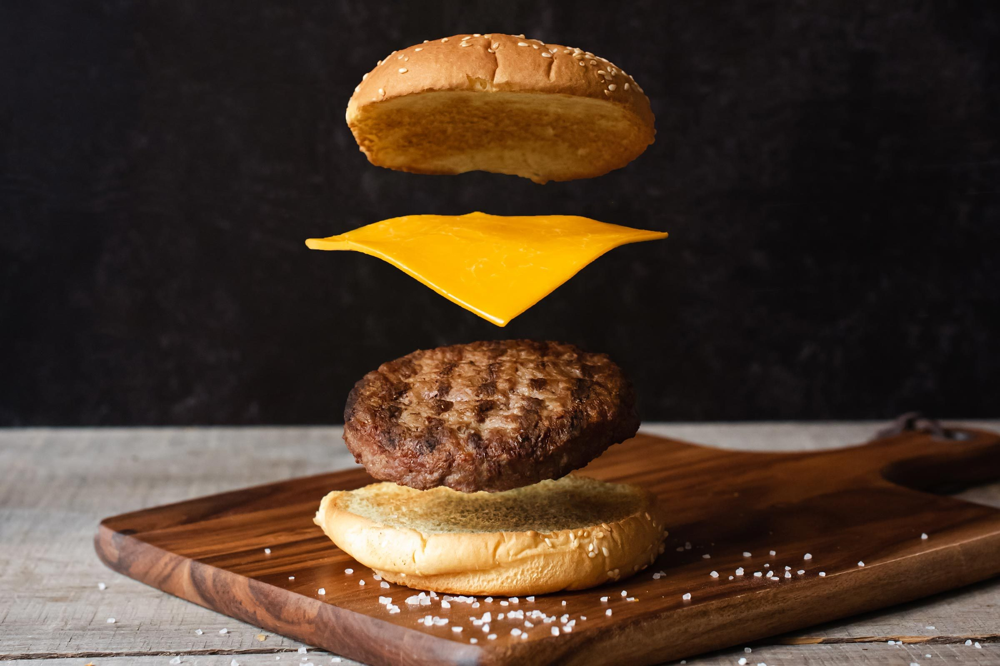

Menu

Igredienten
- 500g gehakt
- ijsbergsla
- chedar
- hamburger buns
Bereiding
- Maak 2 gelijke bolletjes vakhet gehakt en zet ze op het vuur.
- Neem de hamburger buns en smeer de saus die je wenst op de buns.
- Na 10 minuten zal het gehakt klaar zijn en dan kan je deze in je hamburger bun steken.
- Werk het af door er een sneetje cheddar op te leggen en een blaadje ijsbergsla.